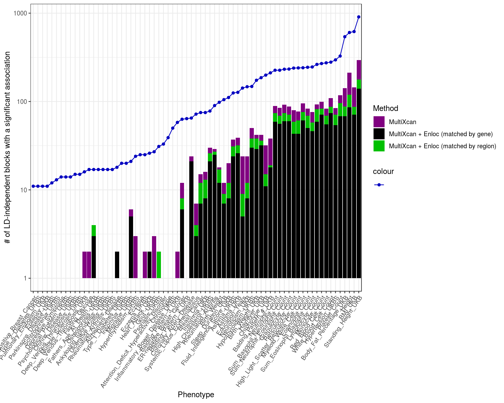
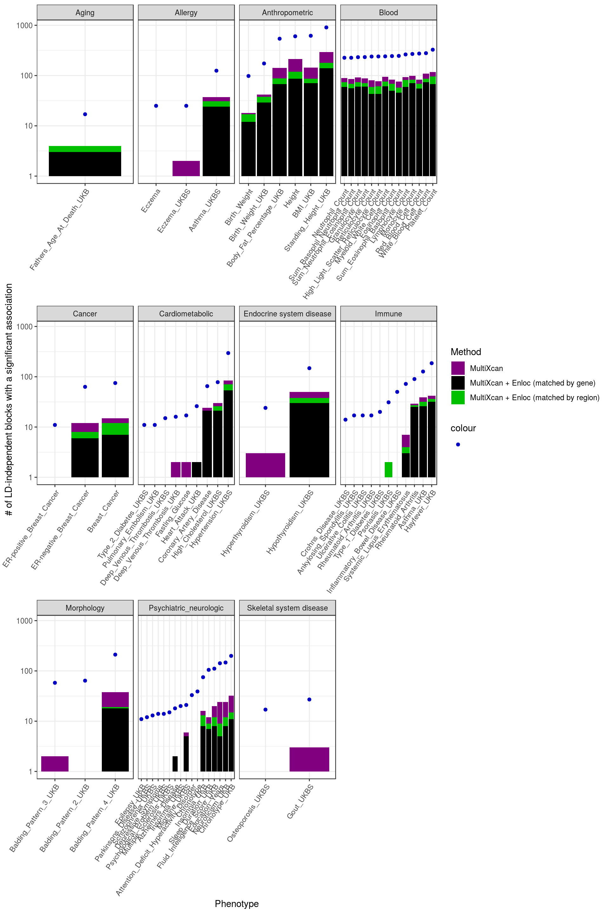
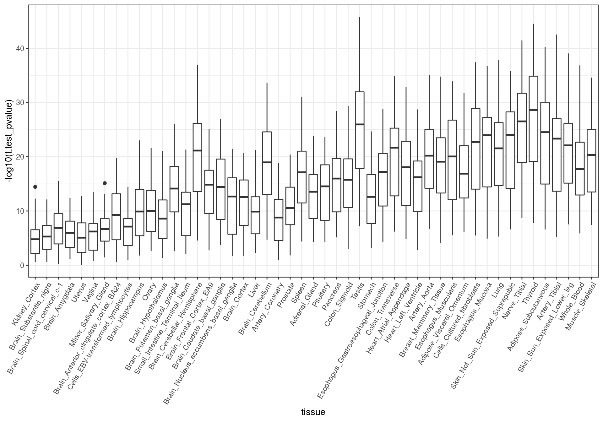
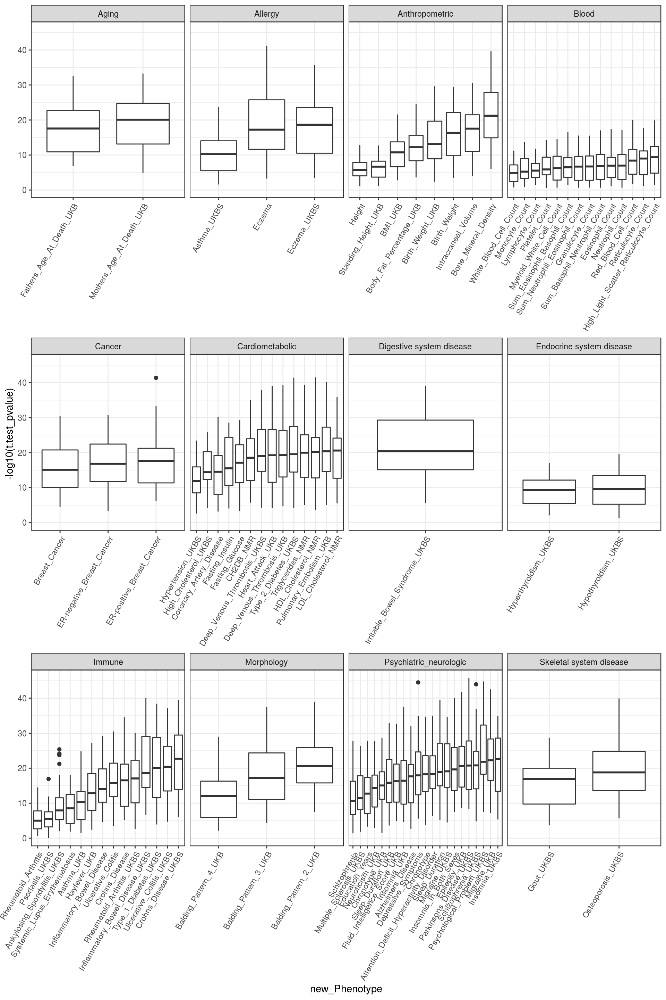

Miscellaneous statistics for the GTEx-GWAS paper
Last updated: 2019-03-19
Checks: 5 1
Knit directory: gtex-gwas-analysis/
This reproducible R Markdown analysis was created with workflowr (version 1.2.0). The Report tab describes the reproducibility checks that were applied when the results were created. The Past versions tab lists the development history.
The R Markdown file has unstaged changes. To know which version of the R Markdown file created these results, you’ll want to first commit it to the Git repo. If you’re still working on the analysis, you can ignore this warning. When you’re finished, you can run wflow_publish to commit the R Markdown file and build the HTML.
Great job! The global environment was empty. Objects defined in the global environment can affect the analysis in your R Markdown file in unknown ways. For reproduciblity it’s best to always run the code in an empty environment.
The command set.seed(20190312) was run prior to running the code in the R Markdown file. Setting a seed ensures that any results that rely on randomness, e.g. subsampling or permutations, are reproducible.
Great job! Recording the operating system, R version, and package versions is critical for reproducibility.
Nice! There were no cached chunks for this analysis, so you can be confident that you successfully produced the results during this run.
Great! You are using Git for version control. Tracking code development and connecting the code version to the results is critical for reproducibility. The version displayed above was the version of the Git repository at the time these results were generated.
Note that you need to be careful to ensure that all relevant files for the analysis have been committed to Git prior to generating the results (you can use wflow_publish or wflow_git_commit). workflowr only checks the R Markdown file, but you know if there are other scripts or data files that it depends on. Below is the status of the Git repository when the results were generated:
Ignored files:
Ignored: .Rproj.user/
Ignored: .httr-oauth
Ignored: analysis/.httr-oauth
Ignored: data/t_test_primary_vs_secondary.rds
Ignored: output/.httr-oauth
Untracked files:
Untracked: data/dapg_variants/
Untracked: output/counts_per_ld_block.csv
Untracked: output/counts_per_ldblock_mx_and_enloc.rds
Untracked: output/gwas_counts_per_ldblock.rds
Unstaged changes:
Modified: analysis/miscellaneous_statistics.Rmd
Modified: code/count_gwas_vs_predixcan_hits.R
Deleted: output/counts_per_ldblock_mx_and_enloc_joined_by_gene.rds
Staged changes:
New: output/counts_per_ldblock_mx_and_enloc_joined_by_gene.rds
Note that any generated files, e.g. HTML, png, CSS, etc., are not included in this status report because it is ok for generated content to have uncommitted changes.
These are the previous versions of the R Markdown and HTML files. If you’ve configured a remote Git repository (see ?wflow_git_remote), click on the hyperlinks in the table below to view them.
| File | Version | Author | Date | Message |
|---|---|---|---|---|
| Rmd | 305d850 | rbonazzola | 2019-03-15 | added html |
| html | 305d850 | rbonazzola | 2019-03-15 | added html |
| Rmd | 815c951 | rbonazzola | 2019-03-14 | updates |
| Rmd | 31378dc | rbonazzola | 2019-03-13 | updates |
| html | 31378dc | rbonazzola | 2019-03-13 | updates |
| Rmd | c58009d | rbonazzola | 2019-03-13 | miscellaneous statistics |
Set paths
# Change this by the path you cloned the GTEx-V8 repository into
gtexv8_repo_dir <- "~/Genomica/GTEx/gtex-v8/"
bigquery_subdir <- "GWAS-subgroup/how-to/BigQuery/"
myrepo_dir <- "~/Genomica/GTEx/gtex-gwas-analysis/"
work_dir <- file.path(myrepo_dir, "analysis")
data_dir <- file.path(myrepo_dir, "data")Import libraries and source scripts
# install.packages("bigrquery")
suppressPackageStartupMessages(library(bigrquery))
# install.packages("RCurl")
suppressPackageStartupMessages(library(RCurl))
setwd(file.path(gtexv8_repo_dir, bigquery_subdir))
# Script with ancillary functions to perform queries to BigQuery
suppressPackageStartupMessages(source("BigQuery.R"))
# Load traits and tissues to analyze
source("Definitions.R")0 bytes processed
0 bytes processedsetwd(work_dir)read_file_from_link <- function(link, sep="\t") read.delim(text=getURL(link), sep=sep, header=TRUE, stringsAsFactors=FALSE)Select phenotypes without deflation after imputation
NO_DEFLATION <- 0
STRONG_DEFLATION <- 1
MILD_DEFLATION <- 2
query <- glue::glue("SELECT Tag as phenotype, Deflation
FROM {gwas_metadata_tbl$dataset_name}.{gwas_metadata_tbl$table_name}")
gwas_deflation_status <- query_exec(query, gwas_metadata_tbl$project)0 bytes processedselected_phenotypes <- gwas_deflation_status %>% filter(Deflation == NO_DEFLATION) %>% .[,1]
strong_deflation_count <- gwas_deflation_status %>% filter(Deflation == STRONG_DEFLATION) %>% .[,1] %>% length()
mild_deflation_count <- gwas_deflation_status %>% filter(Deflation == MILD_DEFLATION) %>% .[,1] %>% length(){r length(selected_phenotypes))} phenotypes were selected for analysis. From the rest,{r strong_deflation_count} GWAS showed strong deflation after imputation, whereas `{r mild_deflation_count} presented mild deflation.
PrediXcan and MultiXcan
0 bytes processed
0 bytes processed- 21627 genes are being tested by MultiXcan.
0 bytes processed- 281749 (gene, tissue) pairs are being tested by PrediXcan.
0 bytes processed0 bytes processed'data.frame': 114 obs. of 5 variables:
$ phenotype : chr "UKB_1160_Sleep_duration" "UKB_1180_Morning_or_evening_person_chronotype" "UKB_1200_Sleeplessness_or_insomnia" "UKB_1807_Fathers_age_at_death" ...
$ best_pvalue: num 1.21e-29 4.19e-16 4.31e-10 1.74e-08 3.97e-15 ...
$ n_genes : int 21627 21627 21627 21627 21627 21627 21627 21627 21627 21627 ...
$ pvalue_thr : num 2.31e-06 2.31e-06 2.31e-06 2.31e-06 2.31e-06 ...
$ Deflation : int 0 0 0 0 0 0 0 0 0 0 ...78 traits have at least one gene significantly associated (according to MultiXcan).
0 bytes processed'data.frame': 114 obs. of 5 variables:
$ phenotype : chr "EGG_BMI_HapMapImputed" "UKB_20002_1452_self_reported_eczema_or_dermatitis" "UKB_20002_1265_self_reported_migraine" "GLGC_Mc_HDL" ...
$ best_pvalue : num 7.04e-18 2.37e-28 1.30e-22 0.00 2.80e-99 ...
$ n_tissues_genes: int 281746 281745 281745 281723 281721 281745 281745 281411 281618 281745 ...
$ pvalue_thr : num 1.77e-07 1.77e-07 1.77e-07 1.77e-07 1.77e-07 ...
$ Deflation : int 1 0 0 1 0 0 0 0 1 0 ...75 traits have at least one gene significantly associated in some tissue (according to PrediXcan).
PrediXcan and colocalization methods
How many among PrediXcan-significant are COLOC-colocalized?
0 bytes processed'data.frame': 117978 obs. of 5 variables:
$ phenotype: chr "pgc.scz2" "pgc.scz2" "pgc.scz2" "pgc.scz2" ...
$ tissue : chr "Brain_Spinal_cord_cervical_c-1" "Spleen" "Brain_Cerebellar_Hemisphere" "Skin_Sun_Exposed_Lower_leg" ...
$ gene : chr "ENSG00000064726.9" "ENSG00000100410.7" "ENSG00000101213.6" "ENSG00000101442.9" ...
$ pvalue : num 5.27e-08 1.98e-09 1.08e-08 5.79e-09 3.22e-08 ...
$ P4 : num 6.43e-03 6.51e-02 2.77e-01 2.23e-05 4.18e-03 ...1379 out of 6854 (20.12%)
What if restricting to protein-coding genes?
'data.frame': 107704 obs. of 6 variables:
$ phenotype: chr "pgc.scz2" "pgc.scz2" "pgc.scz2" "pgc.scz2" ...
$ tissue : chr "Brain_Spinal_cord_cervical_c-1" "Spleen" "Brain_Cerebellar_Hemisphere" "Skin_Sun_Exposed_Lower_leg" ...
$ gene : chr "ENSG00000064726" "ENSG00000100410" "ENSG00000101213" "ENSG00000101442" ...
$ pvalue : num 5.27e-08 1.98e-09 1.08e-08 5.79e-09 3.22e-08 ...
$ P4 : num 6.43e-03 6.51e-02 2.77e-01 2.23e-05 4.18e-03 ...
$ gene_type: chr "protein_coding" "protein_coding" "protein_coding" "protein_coding" ...1253 out of 6119 (20.48%)
How many among PrediXcan-significant are ENLOC-colocalized?
0 bytes processed'data.frame': 201488 obs. of 5 variables:
$ phenotype: chr "pgc.scz2" "pgc.scz2" "pgc.scz2" "pgc.scz2" ...
$ tissue : chr "Brain_Spinal_cord_cervical_c-1" "Brain_Cerebellar_Hemisphere" "Brain_Cerebellar_Hemisphere" "Brain_Cerebellar_Hemisphere" ...
$ gene : chr "ENSG00000064726.9" "ENSG00000101213.6" "ENSG00000101213.6" "ENSG00000101213.6" ...
$ pvalue : num 5.27e-08 1.08e-08 1.08e-08 1.08e-08 1.60e-08 ...
$ rcp : num 0 0.593 0 0.114 0.008 0.006 0 0 0.008 0.001 ...1300 out of 6854 (18.97%)
What if restricting to protein-coding genes?
'data.frame': 182188 obs. of 6 variables:
$ phenotype: chr "pgc.scz2" "pgc.scz2" "pgc.scz2" "pgc.scz2" ...
$ tissue : chr "Brain_Spinal_cord_cervical_c-1" "Brain_Cerebellar_Hemisphere" "Brain_Cerebellar_Hemisphere" "Brain_Cerebellar_Hemisphere" ...
$ gene : chr "ENSG00000064726" "ENSG00000101213" "ENSG00000101213" "ENSG00000101213" ...
$ pvalue : num 5.27e-08 1.08e-08 1.08e-08 1.08e-08 1.60e-08 ...
$ rcp : num 0 0.593 0 0.114 0.008 0.006 0 0 0.008 0.001 ...
$ gene_type: chr "protein_coding" "protein_coding" "protein_coding" "protein_coding" ...1173 out of 6119 (19.169799%)
How many among COLOC-colocalized genes are PrediXcan-significant?
0 bytes processed'data.frame': 19729 obs. of 5 variables:
$ phenotype: chr "pgc.scz2" "pgc.scz2" "pgc.scz2" "pgc.scz2" ...
$ tissue : chr "Artery_Tibial" "Prostate" "Brain_Cerebellar_Hemisphere" "Brain_Cerebellum" ...
$ gene : chr "ENSG00000121152.9" "ENSG00000130427.2" "ENSG00000143641.9" "ENSG00000143641.9" ...
$ pvalue : num 2.21e-03 7.11e-02 2.56e-04 1.83e-04 2.98e-05 ...
$ P4 : num 0.591 0.517 0.906 0.914 0.637 ...2532 out of 2599 (97.42%)
How many among ENLOC-colocalized genes are PrediXcan-significant?
0 bytes processed'data.frame': 25281 obs. of 5 variables:
$ phenotype: chr "pgc.scz2" "pgc.scz2" "pgc.scz2" "pgc.scz2" ...
$ tissue : chr "Brain_Cerebellar_Hemisphere" "Brain_Cerebellum" "Artery_Tibial" "Brain_Caudate_basal_ganglia" ...
$ gene : chr "ENSG00000101213.6" "ENSG00000101213.6" "ENSG00000101213.6" "ENSG00000101213.6" ...
$ pvalue : num 1.08e-08 5.22e-06 2.08e-03 5.60e-06 7.64e-01 ...
$ rcp : num 0.593 0.922 0.708 0.741 0.698 0.824 0.554 0.94 0.933 0.503 ...3014 out of 3401 (88.62%)
How many among ENLOC-colocalized genes are COLOC-colocalized?
0 bytes processed'data.frame': 41127 obs. of 5 variables:
$ phenotype: chr "pgc.scz2" "pgc.scz2" "pgc.scz2" "pgc.scz2" ...
$ tissue : chr "Brain_Cerebellum" "Artery_Tibial" "Testis" "Brain_Anterior_cingulate_cortex_BA24" ...
$ gene : chr "ENSG00000101213.6" "ENSG00000101213.6" "ENSG00000101213.6" "ENSG00000101213.6" ...
$ P4 : num 4.79e-02 3.55e-05 2.11e-01 2.35e-01 1.48e-04 ...
$ rcp : num 0.922 0.708 0.669 0.816 0.741 0.593 0.924 0.824 0.698 0.554 ...2571 out of 5127 (50.15%)
How many loci with GWAS hits also contain a significant gene-level association?
# for the script to generate the file below, see count_gwas_vs_predixcan_hits.R
# counts.per.ldblock <- read_file_from_link("https://storage.googleapis.com/rbonazzola/counts_per_ld_block.csv", sep = ",")
# counts.per.ldblock <- readRDS("../output/counts_per_ldblock_mx_and_enloc.rds")
counts.per.ldblock <- readRDS("output/counts_per_ldblock_mx_and_enloc.rds")
gwas_metadata <- gtex_gwas_metadata() %>%
rename(phenotype="Tag") %>%
select(phenotype, new_Phenotype, Category, Deflation)0 bytes processedcounts.per.ldblock <- counts.per.ldblock %>% inner_join(gwas_metadata)Joining, by = c("phenotype", "new_Phenotype", "Deflation")counts.per.ldblock <- counts.per.ldblock %>% filter(Deflation == 0)
ordered_phenotypes <- counts.per.ldblock %>% arrange(gwas_counts) %>% select(phenotype, new_Phenotype, abbreviation)
counts.per.ldblock$phenotype <- factor(as.character(counts.per.ldblock$phenotype), levels = ordered_phenotypes$phenotype)
counts.per.ldblock$new_Phenotype <- factor(as.character(counts.per.ldblock$new_Phenotype), levels = ordered_phenotypes$new_Phenotype)
counts.per.ldblock$abbreviation <- factor(as.character(counts.per.ldblock$abbreviation), levels = ordered_phenotypes$abbreviation)
str(counts.per.ldblock)'data.frame': 79 obs. of 9 variables:
$ phenotype : Factor w/ 79 levels "ENIGMA_Intracraneal_Volume",..: 68 64 66 70 71 67 61 75 72 65 ...
$ gwas_counts : int 244 233 240 263 269 241 226 327 274 239 ...
$ gwas_mx_counts : num 83 88 77 93 99 95 89 118 83 80 ...
$ gwas_mx_enloc_counts_region: num 69 71 61 82 83 76 74 96 69 59 ...
$ gwas_mx_enloc_counts_gene : num 50 60 43 59 71 61 59 68 55 43 ...
$ new_Phenotype : Factor w/ 79 levels "Intracraneal_Volume",..: 68 64 66 70 71 67 61 75 72 65 ...
$ abbreviation : Factor w/ 79 levels "INV","MFI","UN_IBS",..: 68 64 66 70 71 67 61 75 72 65 ...
$ Deflation : int 0 0 0 0 0 0 0 0 0 0 ...
$ Category : chr "Blood" "Blood" "Blood" "Blood" ...# shapes <- c("GWAS"=6, "MultiXcan"=3, "MultiXcan + Enloc"=8)
cols <- c("GWAS"="#0000C0", "MultiXcan"="#800080", "MultiXcan + Enloc (matched by region)"="#00C000", "MultiXcan + Enloc (matched by gene)"="#000000")The following plots represent: - The number of Pickrell regions with a GWAS hit (a proxy for the number of independent GWAS signals). - Among those, the ones with a MultiXcan-significant gene. - Among those, the regions with an ENLOC-colocalized gene. - Among the regions with a MultiXcan-significant gene, the ones where this gene is ENLOC-colocalized.
'data.frame': 71 obs. of 9 variables:
$ phenotype : Factor w/ 79 levels "ENIGMA_Intracraneal_Volume",..: 68 64 66 70 71 67 61 75 72 65 ...
$ gwas_counts : int 244 233 240 263 269 241 226 327 274 239 ...
$ gwas_mx_counts : num 83 88 77 93 99 95 89 118 83 80 ...
$ gwas_mx_enloc_counts_region: num 69 71 61 82 83 76 74 96 69 59 ...
$ gwas_mx_enloc_counts_gene : num 50 60 43 59 71 61 59 68 55 43 ...
$ new_Phenotype : Factor w/ 79 levels "Intracraneal_Volume",..: 68 64 66 70 71 67 61 75 72 65 ...
$ abbreviation : Factor w/ 79 levels "INV","MFI","UN_IBS",..: 68 64 66 70 71 67 61 75 72 65 ...
$ Deflation : int 0 0 0 0 0 0 0 0 0 0 ...
$ Category : chr "Blood" "Blood" "Blood" "Blood" ...Warning: Transformation introduced infinite values in continuous y-axis
Warning: Transformation introduced infinite values in continuous y-axis
Warning: Transformation introduced infinite values in continuous y-axisWarning: Removed 14 rows containing missing values (geom_bar).Warning: Removed 24 rows containing missing values (geom_bar).Warning: Removed 25 rows containing missing values (geom_bar).
The same, but by trait category:
Warning: Transformation introduced infinite values in continuous y-axis
Warning: Transformation introduced infinite values in continuous y-axis
Warning: Transformation introduced infinite values in continuous y-axisWarning: Removed 14 rows containing missing values (geom_bar).Warning: Removed 24 rows containing missing values (geom_bar).Warning: Removed 25 rows containing missing values (geom_bar).
Do primary eQTLs have larger effect on complex traits than secondary eQTLs?
t-tests were performed for each (tissue, trait) pair:
0 bytes processedWarning: Column `tissue` joining factor and character vector, coercing into
character vectorWarning: Column `phenotype` joining factor and character vector, coercing
into character vectorggp1 <- ggplot(df, aes(x=tissue, y=-log10(t.test_pvalue))) +
geom_boxplot() +
theme_bw() + theme(axis.text.x = element_text(angle = 60, hjust = 1))
ggp1
ggp2 <- ggp1 + facet_grid(Category ~ .)
ggp2
# ggp2 <- ggplot(df, aes(x=phenotype, y=-log10(t.test_pvalue))) + geom_boxplot() + theme_bw() + theme(axis.text.x = element_text(angle = 60, hjust = 1))
ggp3 <- ggplot(df, aes(x=new_Phenotype, y=-log10(t.test_pvalue))) +
geom_boxplot() +
theme_bw() + theme(axis.text.x = element_text(angle = 60, hjust = 1))
ggp3
ggp4 <- ggp3 + facet_wrap(Category ~ ., drop = T, scales="free_x", nrow = 3)
ggp4
How does variance of gene effects vary across traits?
sessionInfo()R version 3.4.4 (2018-03-15)
Platform: x86_64-pc-linux-gnu (64-bit)
Running under: Ubuntu 16.04.6 LTS
Matrix products: default
BLAS: /usr/lib/libblas/libblas.so.3.6.0
LAPACK: /usr/lib/lapack/liblapack.so.3.6.0
locale:
[1] LC_CTYPE=en_US.UTF-8 LC_NUMERIC=C
[3] LC_TIME=en_US.UTF-8 LC_COLLATE=en_US.UTF-8
[5] LC_MONETARY=en_US.UTF-8 LC_MESSAGES=en_US.UTF-8
[7] LC_PAPER=en_US.UTF-8 LC_NAME=C
[9] LC_ADDRESS=C LC_TELEPHONE=C
[11] LC_MEASUREMENT=en_US.UTF-8 LC_IDENTIFICATION=C
attached base packages:
[1] stats graphics grDevices utils datasets methods base
other attached packages:
[1] forcats_0.4.0 stringr_1.4.0 dplyr_0.8.0.1 purrr_0.3.1
[5] readr_1.3.1 tidyr_0.8.3 tibble_2.0.1 ggplot2_3.1.0
[9] tidyverse_1.2.1 RCurl_1.95-4.12 bitops_1.0-6 bigrquery_1.1.0
loaded via a namespace (and not attached):
[1] tidyselect_0.2.5 xfun_0.5 reshape2_1.4.3 haven_2.1.0
[5] lattice_0.20-38 colorspace_1.4-0 generics_0.0.2 htmltools_0.3.6
[9] yaml_2.2.0 rlang_0.3.1 pillar_1.3.1 withr_2.1.2
[13] glue_1.3.0 DBI_1.0.0 bit64_0.9-7 modelr_0.1.4
[17] readxl_1.3.0 plyr_1.8.4 munsell_0.5.0 gtable_0.2.0
[21] workflowr_1.2.0 cellranger_1.1.0 rvest_0.3.2 evaluate_0.13
[25] labeling_0.3 knitr_1.21 curl_3.3 broom_0.5.1
[29] Rcpp_1.0.0 openssl_1.2.2 backports_1.1.3 scales_1.0.0
[33] jsonlite_1.6 fs_1.2.6 bit_1.1-14 askpass_1.1
[37] hms_0.4.2 digest_0.6.18 stringi_1.3.1 rprojroot_1.3-2
[41] grid_3.4.4 cli_1.0.1 tools_3.4.4 magrittr_1.5
[45] lazyeval_0.2.1 crayon_1.3.4 whisker_0.3-2 pkgconfig_2.0.2
[49] xml2_1.2.0 lubridate_1.7.4 assertthat_0.2.0 rmarkdown_1.11
[53] httr_1.4.0 rstudioapi_0.9.0 R6_2.4.0 nlme_3.1-137
[57] git2r_0.24.0 compiler_3.4.4